Reflection
(It’s a Girl!!!) Our Birth Story of Sureyya Cennette @ UCSD Hillcrest
Sureyya Cennette (Pronounced “So-ray-yah Ja-nette” In Turkish translated as “Pleiades Paradise”)
Born January 7, 2015. 7lbs 1ounce.
Wednesday January 17th 2:48am PST
A discussion around the difference between cramps, contractions, and “false pregnancy” begins.
Being that we were not expecting Zonje (pronounced “Zone-G” a Dutch nickname for little star) we had some revolving discussions about what Shara was feeling at the time. We both weren’t sure if the pregnancy actually started. It was a classical debate if wether these were Braxton-Hicks contractions or “true labor”, Shara was definitely clear on the weight of them but of course we were asking ourselves if they were gas pains, cramps, or true labor.
We decided to just stay with them and wait to see if:
- water would break (some women it doesn’t)
- her mucus plug came out
- the contractions became steady and in line
[6:03am PST]
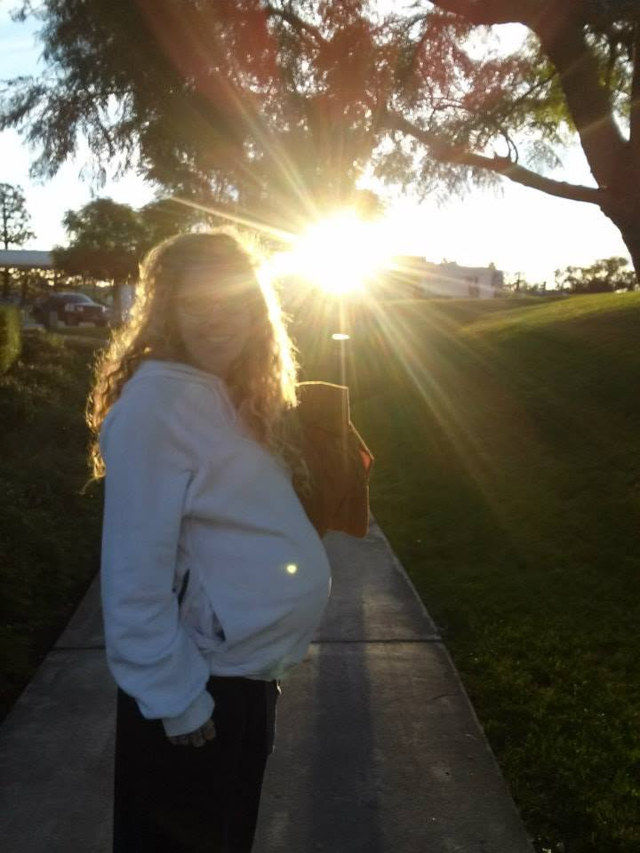
After timing them and validating them in the body as several became prominent, Shara was clear that we needed to get to the Hospital right away (UCSD Hillcrest). Being I was at a friends house and Shara at her mothers we had to coordinate the effort. I grabbed a pre-ready made bag, cleaned out the car, and hit the road for a 25 minute drive to meet her.
[6:35am PST]
As I pulled up to meet at the Denny’s in El Cajon to meet Sharon (Shara’s Mother) a faint dim glow of the sun was visible in the sky and it was brisk and sharp outside like a perfect beautiful California morning. The air was crisp and as usual the morning traffic was in full swing. I jumped out, left the car running and opened the doors of the SUV as I stood in front of the vehicle with a phone in one hand and alertness in the other.
A few moments later I saw the precious cargo arriving. Shara in a big white baggy sweatshirt with one hand clutched on the ceiling handle of the car as if she was in an off-road race but with a huge cheesy smile like it was her birthday song being sung to her as she walked into a surprise party. Her mother nimble, confident, and loving about the transfer hopped out the Car as we exchanged hugs and got bags, pillows, and then finally as I bent over to grab Shara from the passenger seat a first taste of the process arrived (for me) as we experienced a contraction in the Denny’s parking lot. If you’re reading this and new to the birthing process as I was, I have to tell you there is something so vastly incomprehensible to know someone so well, spend everyday together straight for a year, experience losing your home, identities, sanity, security and self worth, seeing the abyss of another’s emptiness and the blinding brightness of each-others love and brick by brick assembling those back together in a way that no passer by could ever deem a formidable shack suitable for living, but knowing the fruits of our labor where in what was underneath the surface, the bedrock and foundation that came only from the purposeful pain which brought no justification yet demanded to be felt and endured… at most times with no tangible outcome — It was this first contraction together, her head in my neck, her arms wrapped around me, my hand holding her lower back and the other cuffing her head and hair, that every moment of that journey glared it’s beautiful armor of protection and presence for us now on this one, with the grandest of outcomes.
[6:44am PST]
How interesting pain and pleasure, the contrast and space between them, indeed a cosmic parody playing seductive slight on the emerging quality and definition of serenity… a perfect verse on our movement in the stars and even the not-so-movement in rush hour traffic while in labor, lol.
The flexibility of our minds and bodies to go from a moment of pain to pure joking and laughter as we made fun of ourselves and talked about visualizations to get through the rise and fall of her cervix beginning to dilate. Crazy.
Watching the sun come over the mountains, seeing people peek over at us in traffic to try and figure out what in the world was going on in the car; maybe because our lack of worry, maybe because the pronounced gestures of our faces as we would climb a contraction, maybe just because we would come out of it and literally be chuckling with commentary on these spaces, either way… we leap frogged our way through traffic to the hospital in 2.5 pieces.
[7:07am PST]
Pulling into the Hospital was lively as most of the various staff were just getting on shift.
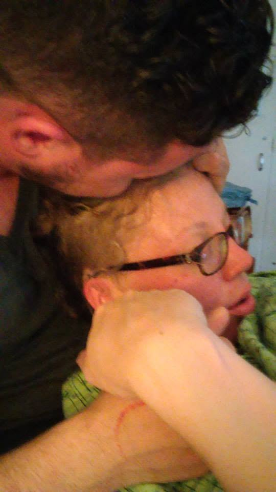
We parked in the parking garage (in a 30 minute only space which I later got two tickets for) as I slugged the bag over my shoulder, grabbed the pillow, her health file/folder and helped Shara out of the car.
We started to get our communication down in terms of contractions and we found out that Shara and Baby’s preferred method for them was standing up, with a slight bend in the knees, and breathing together with our heads in shoulders.
It was a slow intentful walk to the front doors as we learned the breath and the flow of this first stage.
As we rounded the front, the rising sun, in it’s fullness was directly in front of us. It was so breathtaking and it’s warmth was vibrant and embracing. We took a moment to breath, and look into the sun, and together watched its bright yellowy orange glow turn into a pinkish radiance that we focused on enveloping us until finally it was a bright ultraviolet that we both witnessed and then took and turned in toward us for another contraction. As we got through that one we exhaled and turned to continue walking to the doors which were about 15ft from us and low and behold a Hummingbird swopped down to the left front of us. Uncanny that was, because the morning after the night we conceived (camped out on the ruins of our burnt house) Shara went to goto the bathroom by some boulders on the property and while she was peeing I witnessed a hummingbird dart down to her and couldn’t believe it. I then saw that hummingbird fly to what looked to be between her squatted legs -- Shara later confirmed that it did indeed coming right to her while peeing... it was right then she was in full knowing that something miraculous occurred the night before under the stars.
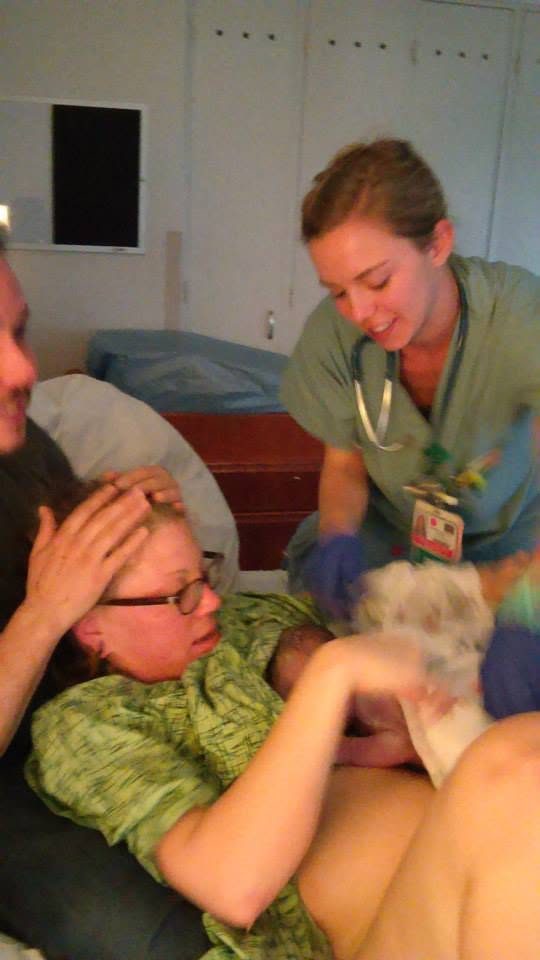
[7-8am PST]
We had a lot of practice with our newly found breathing and sounding techniques because I totally dropped the ball and mixed up elevators, wings, and areas of the Hospital, total “DUHH” moments, sorry love ;). We even went down a flight of steps with a contraction in between to get to the Birthing floor (for safety precautions you can only access that floor through one set of elevators in the hospital).
We finally got to the the right floor but then needed to go back down, again (I know I know) to check in with the head nurse (Berkeley, a true Guardian Angel). They got us into a examination room and called the support staff.
[8-9am PST]
After her first, “throwing up” which was a surprise because Shara hadn’t once had morning sickness during the whole pregnancy. She sat down on the hospital recliner as the midwife checked her cervix to find it was only dilated at 2cm. Typically they wait for a 5-6cm dilation to be officially admitted and start the process. Not knowing how much longer we had till then (some cases a few hours, others a whole day) we all decided to go outside in the sun and walk around (when I heard this I was like “really, this woman is about to give birth and we should go stroll around and talk about the weather?!”).
We eventually made it outside with an interesting contraction in the elevator, another in the middle of the hallway, and by the restroom, each person, staff or visitor of the hospital watching us with curious care to possibly intervene or help. It seemed we had a grip on the situation (we really just made up every step of the way... finding out what kind of breathing, toning, and concentration on each-other worked in the progress).
We made it outside where we found a patch of grass, with some gazeboes and funny pictures posted on pillars for this “wellness walk”. We made some joke about the stick people pictured and came into another contraction with intensity building. I then told Shara to move almost like a swaying belly dance fashion and there we figured out a new trick to moving through the pain. I would stand behind her and we would rock-together with a pattern of breath-work going up the visualized purple pyramid like a gold ball pushing it with our breath till we got the top in which we would let out breaths... rolling out and watch it go down the other side.
This last about 30-45minutes and we decided it was time to back inside because we could both tell that it was getting more and more painful. We only made it through the doors to find seating and then Shara reminded me to time the contractions so we pulled out the cell phone and used the “lap” button to see how quickly they were happening. This was where we found out that those early ones were just a tease in intensity.
[9-10am]
This time we knew which elevators to goto (sheesh) but had a hard time getting there because the contractions where a minute apart. We used the walls and railings to hold onto while I got behind her chest to back like practiced outside and would guide her body gently side to side and focus on each breath and coach her with total confidence creating our little safe bubble again and again.
A volunteer at the hospital saw this and asked if we needed a wheelchair which we finally got.
It only helped to move us closer to the Nurses room because sitting and having a contraction was not an option for the Baby and Shara.
We got to the checkup room where we found she was 4cm 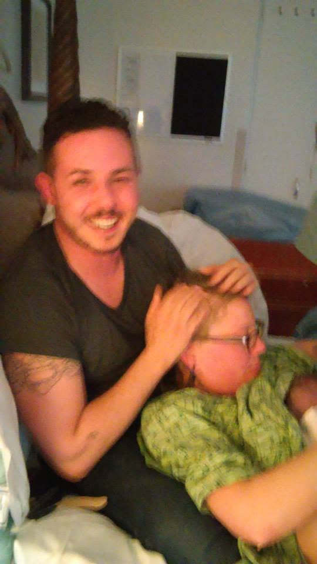
[11am-4pm]
The birthing room is like nothing you’ve seen in movies or like anything that was a floor beneath us.
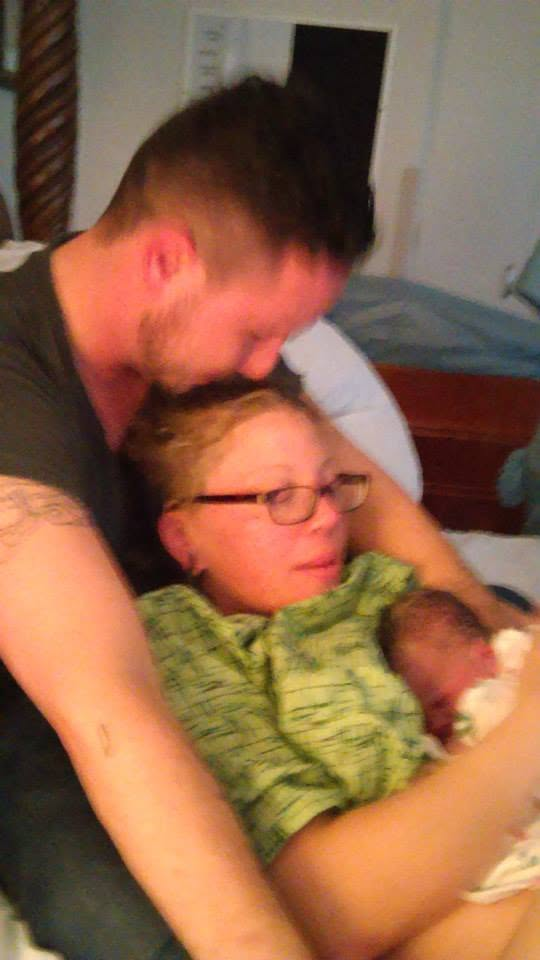
Because we decided to have a Natural Birth (no IV, fetal monitor, hook-ups, drugs, stirrups, and doctors) this room was outfitted unbelievably like a bed-and breakfast hotel room.
A huge Cali-King sized bed with grand 4 posts that had Celtic carvings around them stood tall and strong.
A jacuzzi like tub in one corner ready to be filled and heated, paintings on the wall of mandalas and oriental paisleys.
Large, almost floor to ceiling windows the whole one side of the this room where we could see the sun, clouds, and trees outside with little obstruction.
We started the real labor portion around 10:30am with Shara on top of a huge bean bag 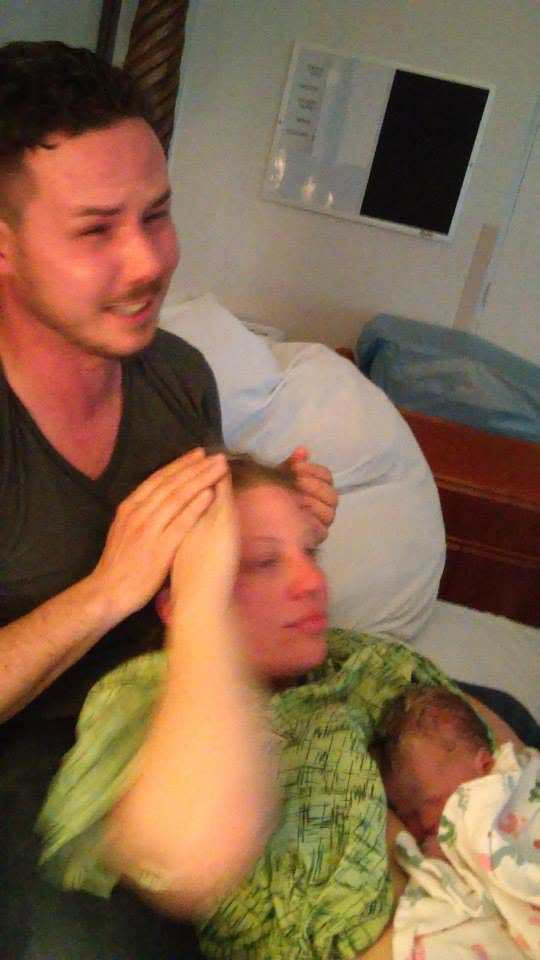
Shara was so present, so communicative as she began to moan louder and louder when I got the ping to channel the sounds into toning.
Then came the OM’s. We would carry the note a few times concentrating on matching the pitches as the contractions were happening and then a bit of whaling as they released trying to match and find the natural guiding sound and channel for the energy to go through.
We alternated from the bed, tried one of those exercise balls, and then finally got to put one of those massive bed posts in use when I learned from one of the midwives to press on her hips to ease the pain while we were rocking.
At that moment her water broke on both of us.
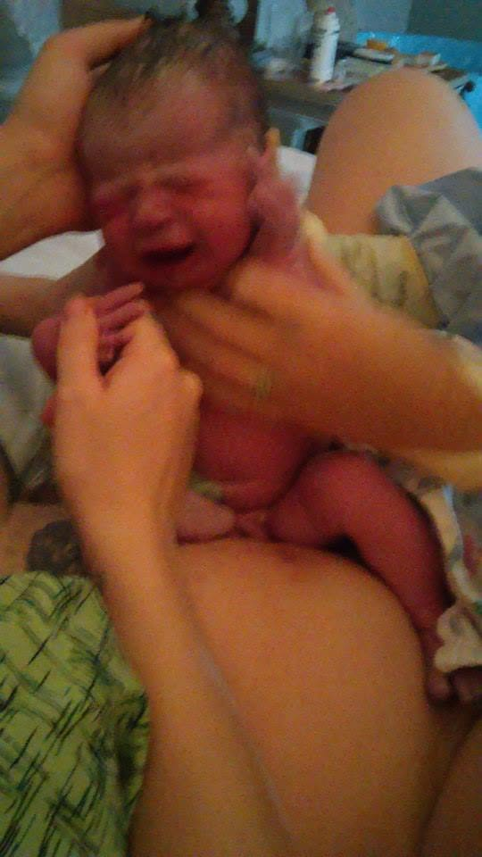
I was surprised because I’m telling you the amount of pressure and force I was using would certainly cripple and person I did that too and I was only surprised briefly (forgetting the amazing feat she was already championing) to see that Shara could take that whole force, with rocking to the point of those minute-two minute contractions were over because I was physically exhausted each time.
Watching her strength and conviction I learned that anything I went through in the Army was a cakewalk compared to what she was consciously doing.
As we were going up each pyramid of pain Shara intuitively started expressing the intensity with not only squatted rocking and swaying but started doing this what looked to be dance move circa 2000 — where she would move her hands up in this Tai Chi form and then push them down in one fluid move along her sides and then around her pelvis. We then morphed that into this bit of Falun Dafa (buddist meditation exercise) that worked until it didn’t, lol.
At that point they recommended she go into the shower under hot water to ease the pain.
So we both went around the corner into this private shower that had a large seat and got under the water (her naked, me in full clothing).
It was there within the porcelain tiles that we went back to toning and found the perfect pitch and vibration to carry us up and down the contractions. We got so loud at one point in perfect harmony that everything around us would disappear and with one hand together and the other on her back, sometimes neck and crown of the head we would Om in three perfect sets of tones and lengths and then I would remember some of my Shamanic Chants passed to me from the Navajo and Apache Tribes and guide her back to normalized breathing where the midwives standing right by the shower curtain offered grounding and releasing techniques to let all the tension from from the body.
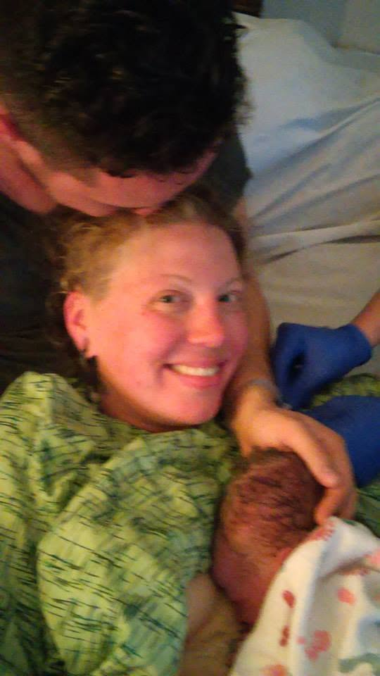
At one point we had two of them with hands extended behind me each on Shara and I in beautiful support and honor. Coaching at very poignant times in gentle guidance and expertise.
It seemed as if we were under the water and in that shower for lifetimes as all time and awareness of the entire world were away from us. Sometimes the contractions would let up where I would then sit at Shara’s feet and make up songs of love and kissed her thighs, feet, legs, back, and all over, thanking her and reaffirming her strength and how amazing she was doing.
It was a time after this that the Nurse (Berkely) and Midwife (Beth) and Doula (Ann) decided to have us come back to check her dilation.
With utter amazing strength and coordination Shara walked back to the bed and we experienced the grandest of contractions, we had a hard time getting her onto the bed and then one of the Angels came in with a stealth ninja move and placed a stool by us to help her up.
We got her onto the Palace Bed and her dilation was 8cm. A little more to go.
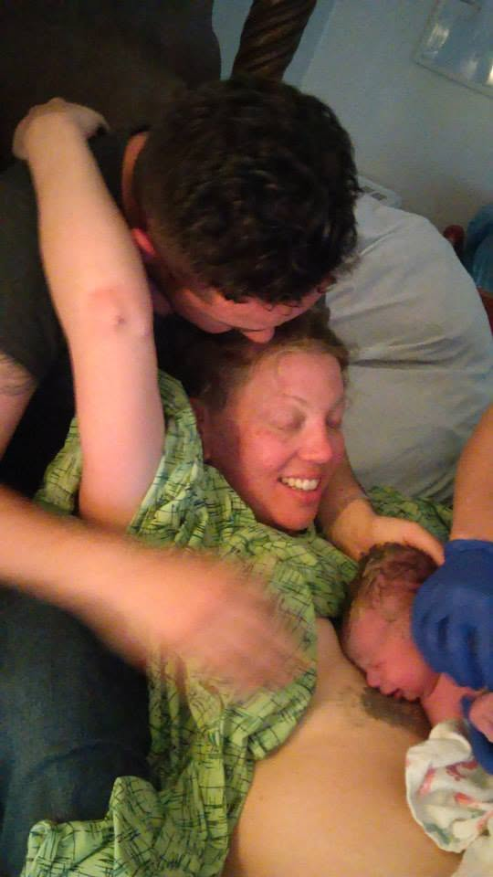
Shara with nothing but conviction and courage got herself up and off the bed with little help where we got to use that bed post once again.
Upon us was a climax of pain yet felt, she grabbed the top of the post all by her self, leaned her head back, and moaned in pain, swaying and centering down into a Omm, she rocked and gripped as if almost Ecstatic Dancing with that post with courageous life and Beth literally called her a beautiful birthing Goddess.
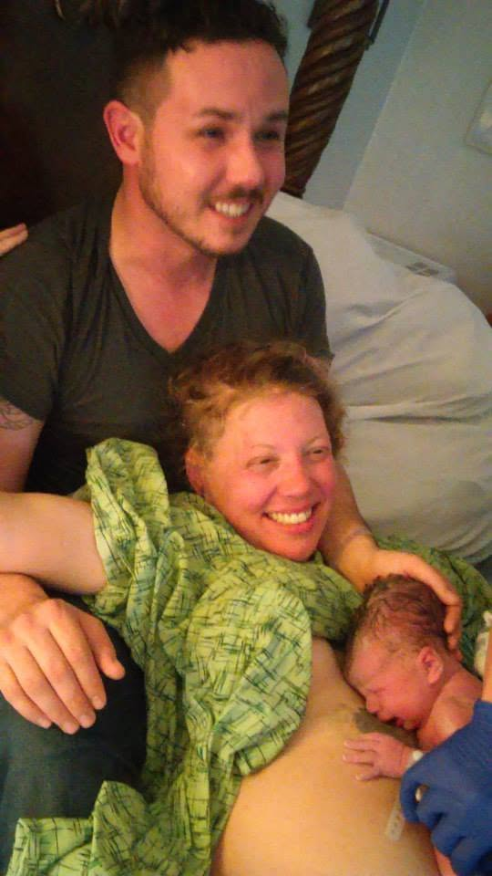
The sight, I mean, WOW.
Here this naked, tattooed, warrior being was arched back in fluid motion giving her whole self with zero fear. It was beyond anything I could imagine or see and I was filled with an attraction and adoration that is the sexiest thing I have ever witnessed.
I moved in quickly with that electricity I felt towards Shara at that moment and kissed her in deep exchange as if this was our Apocalypto moment and she returned with such passion and beauty the room and caregivers were just silent in observation.
This is the point where we both felt this frenetic passion and attraction that made itself known to us and we kept it going as we walked to the shower again to get a little more dilated, then our kisses and countless “I love you”s were the chorus to our chanting various Om’s and Tribal sounds.
Then in the shower the bearing down of the child was so strong I was holding Shara up as she vigilantly surrendered her trust to me and writing this now I am in greater tears then with previous words I’ve been typing because I realize how much trust she has given me...
Since the time she meet me, in the worst condition I’ve ever been in my life, from day one gifted me something so great that all my worth of having could never imagine receiving, that all our struggles, mistakes, and seeming failures forged upon us could not diminish in the slightest.
The ideas we had about our life weren’t dependable because there was a new one every week, emotions about what we meant in life as individuals were expendable because they were not unique...not unique enough that is to relentlessly follow.
Our fallback, our ground of being, our permission to be — wrecked and wrong was thank god, our love & trust.
THANK YOU BABY, THANK YOU, THANK YOU THANK YOU for giving me this every day and moment of our journey.
As this bearing down occurred and she dropped into my arms every cell in my body held her in the rain of this shower washing the clotted blood and tissue run down her legs and my feet as the 4 minutes of contraction became the marker for the baby coming NOW.
The amazing posse of Angels all reached in as they guided our drenched bodies through the hallway and back into the birthing room.
The position for birth was a tough one, Shara openly and amazingly, found more strength, to get her body into the right place.
We tried over the beanbag, nope.
We tried, on her back laying down, nope.
We tried her side, nope.
She, like nothing I have ever seen, tried pushing this baby in multiple positions that would of had me begging for an epidural.
Realizing this in between finding the final spot I reminded her... if she thought for a second she needed it (epidural, drugs, anything) that she has my support in getting it.
She grabbed my head and we deeply kissed again and she said;…
No.
We are already here.
So I gathered my strength and conviction once again taking cues from her reservoir of power and declared: “You got this baby!”
We kissed again.
The Angels suggested I get behind her on the bed and she in-between my legs laying against me almost like I was giving birth to her.
We moved into position and Shara without her glasses and no real ability to see the faces of the people around us reached a place of outwardly action. We received the most tender and firm care from each person in the room, in the most beautiful dance of perfection between Berkley with the little doppler machine checking the baby’s heart rate and all else to the Beth in captivating clarity coaching her in the right ways to push and the right place in what was the deepest pain ever to center her downforce of air and concentration. I’ve never witnessed people ever in my life have such precise love and care, such tender but firm guidance, pure masters who serve the greatest mastery of the universe, birthing.
I looked at each of the three ladies (Berkeley on the bed with us holding Shara’s leg and mine, with an assortment of support and technical measure, with keen laser like focus on all of the movements of us, the baby, ready at the slightest indication to maneuver us into perfect health, Ann standing by Shara’s chest, holding her hand, gazing deeply into Shara’s soul, offering a foundation of calmness like the tectonic plates that we live upon daily, and fanning her with confidence and utter knowing, and Beth who kneeled before Shara’s open legs, who held that landing strip of our baby like the president coming on arrival, constantly in hand and heart feeling the baby and massaging both while directing Shara’s delivery strength and position.
The sureness that they exchanged was like god winking at us letting us know it would be ok and they had our back. I would gladly take a bullet for each of those women in that room because they came into battle like knights with me in strategy that seemed perfected over centuries.
As the baby was coming and my amazing partner in life finally got the perfect technique of push (mind you apologizing that it had not been done sooner to everyone in the room, sharing that it was hard, and only had asked one if everything was ok) we got her glasses on as she approached the ring of fire and Ann held a mirror down between her legs so she could see the baby coming.
Ohhhhhhh Myyyyyyyyyy Goooddddddddd!
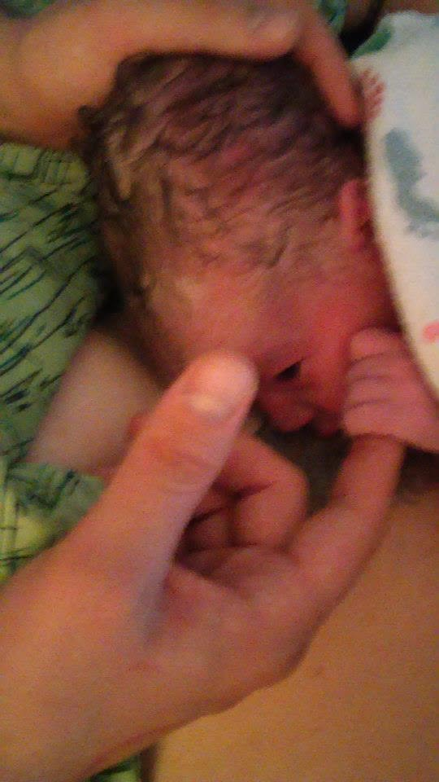
I watched the top of her head slowly coming, I heard and saw my Shara adjust immediately from the coaches advice and through each push I saw my only real space now to play another powerful part.
At that point I used every healing technique I ever learned since I was 13 (thank you Zerrin, My Mom who brought me up to learn healing modalities and really how to love a woman which I may just have finally figured out this time round') so in between each push Shara would dip into a trance like state and regain all her energy.
As we went into the push she found the right place and position, the UCSD Angels guided her perfectly and precisely, and in between each push she let go and released totally into my arms and into another place only to awake with the sound of Om and her new push coming on.
During the Ring of Fire (The head coming through) the Angels knew something was “off”.
They had been monitoring the baby’s heartbeat like a mama hawk and it was suddenly shallow.
So they all knew right away and as Beth felt in around the babys neck and found that the cord was wrapped around our little one, she consoled our precious girl with her half head sticking out by massaging her cheek and head and during each gentle stroke the babies heart-rate climbed from a slow scary pulse to full strong beat. On the side in respect but responsibility Berkeley called for additional support in a calm and diligent manner not to frighten Shara and I as Ann drew Shara’s focus in a loving manner back to positioning and leadership.
Everybody digging in and galvanizing a full final battle cry… acknowledged that this had to be the last push.
I grabbed Shara hand, whispered into her ear; this is it baby, give this one everything you got and I will to, we got this!
With a push that could move a freight train by sound locomotion alone and the most amazing interplay between UCSD Angels, the baby was lifted out and in one movement I am still not sure of (looked like a Bruce Lee secret move) Beth slipped her hand around the baby’s neck as if it was wind itself and pivoted the baby around in the other arm and the cord around her neck was as if never there.
Little Sureyya came right onto Mamas naked belly 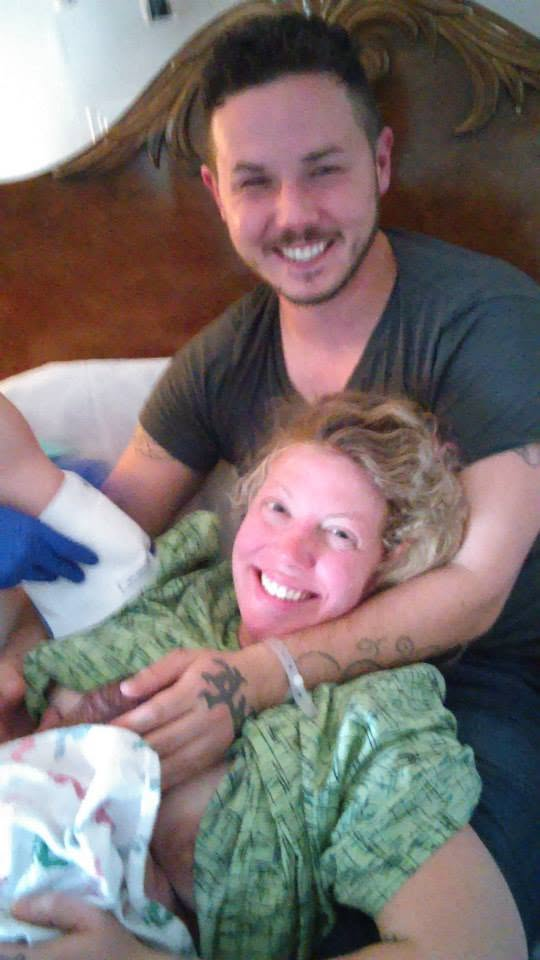
The following two nights and three days our little girls never left our side 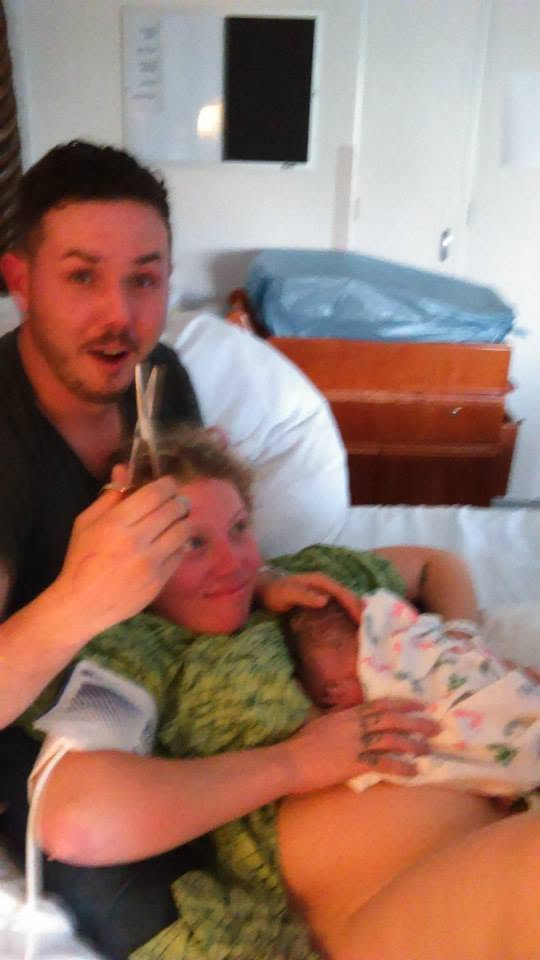
With whimsical and loving manner all the UCSD staff checked our baby and did not force or pressure us into a single decision or position.
The priceless care and advice given by each staff member, the respect they gave to us and care while we for 99.9 percent of the time remain in this plush bed with our angel was astonishing and beautiful.
We’re so grateful that Sureyya learned how to sleep with love and feel safe with the security of us in every moment.
I trust will be the foundation of her attitude towards every new moment in life.
Shara, you are officially the strongest women I have ever met.
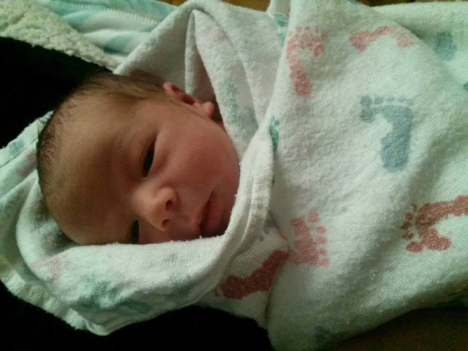
I don’t ever want to have words to describe my love for you, I just want to find new ways to express each day of our lives.
I know I told you this countless times but hear it now once more… because my forever adoration and affection has been sealed mostly in part to your undeniable strength and fortitude — not only in these moments I have described but the many countless ones in secret you have walked and crossed with me.
I love you.
To the UCSD Angles Berkely, Beth and Ann;
My humblest most profound gratitude for your hearts, hand, and minds.
And most importantly your choice for being and doing what you do in this world.
Know that for the rest of my life as well as my child’s I will include and honor your service to my family in the highest regards.
You are TRUE HEROS. Period. Thank You, I love you.
To Shara’s mother who has been there in the toughest part of our Journey and giving her the space for us to make the next step, Please Forgive me, Thank you, I love you.
To My Bestfriend in the whole world, Artie... a man who has opened his heart and home to me and guided me in the most pivotal of ways. Who’s advice and undying trust built from nothing has given me the runway for my family now; Thank you, I love you.
You have my back and I yours forever the rest of this life, my brother.
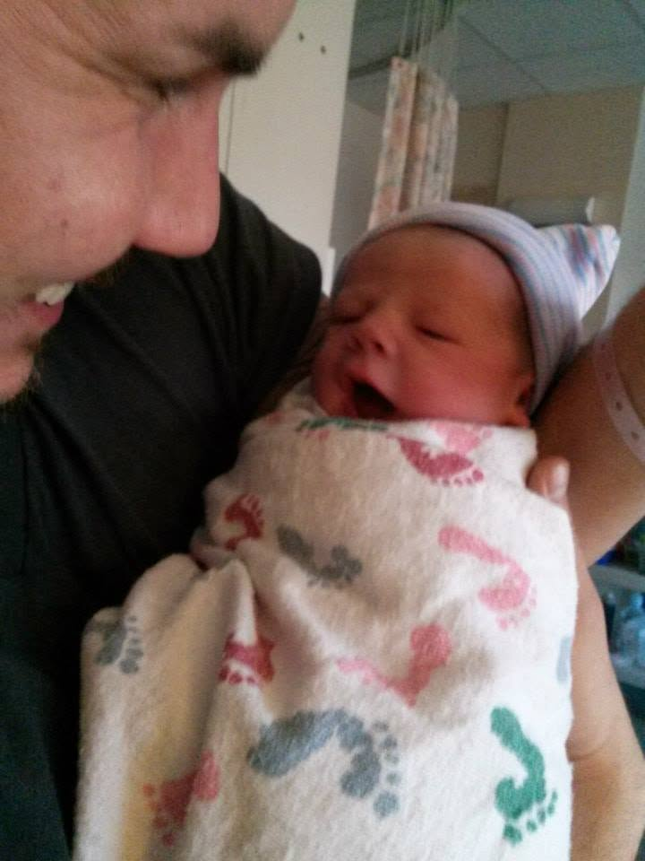
To my Sister, Sonya a young woman the world has yet to know and with right reason (on the brink of finding her craft and showing her unique genius). Your softness, your depth, your strength in solitude and the courage to find happiness and meaning all by yourself is a constant reminder of what is inside of me to always do the same.
You have never left my side and I will only live each day building a proverbial home for you and yours for us all to share and grow in any way it happens. Thank you, I love you.
And finally my newfound respect, honor, and gratitude (because you don’t know until you do) to my crazy but undoubtedly most resilient and loving parents who through their own adversity have never stopped loving me and offering any and all support in the darkest hours of my life.
Mom and Dad you allowed me to fear nothing in this life and got me here to where I am.
Believe it or not through our unique path being separated and sorrow at times, we have always held eachother near and close when it counted. Thank you. I love you.
I know now and could never once again judge you or critique your lives, for you have given me life and to finally now have my own is more than anything else could be.
And to what I said before about if I were to be a man a love I could never judge how and in which ways others do (in so far as they do and thats what matters the most as we put our head on the pillow at night) I take back all childish and mature judgments of you and relinquish all bullshit righteousness I may have once had. You are amazing, never forget that. Please forgive me, Thank you, I love you.
To life and to love, being you so I see you!
Get it gurrrllllllll!
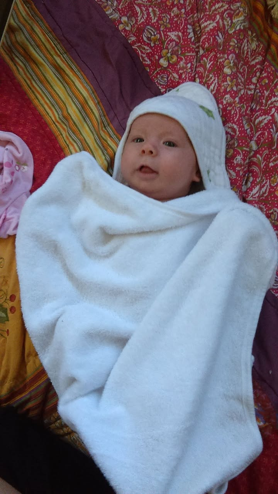
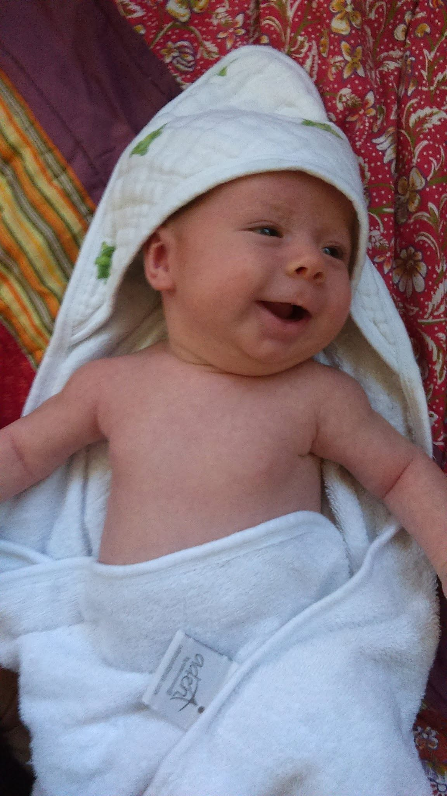
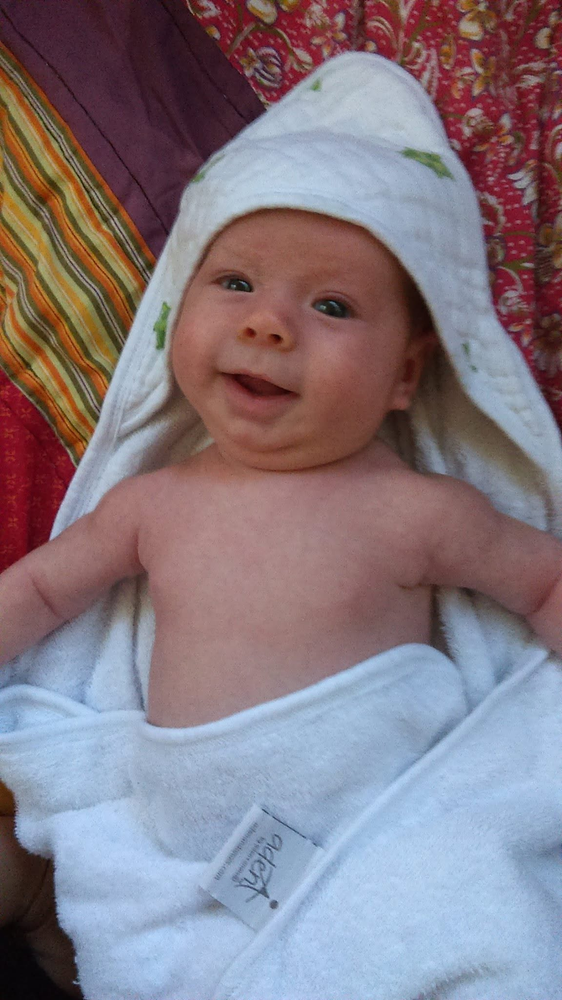